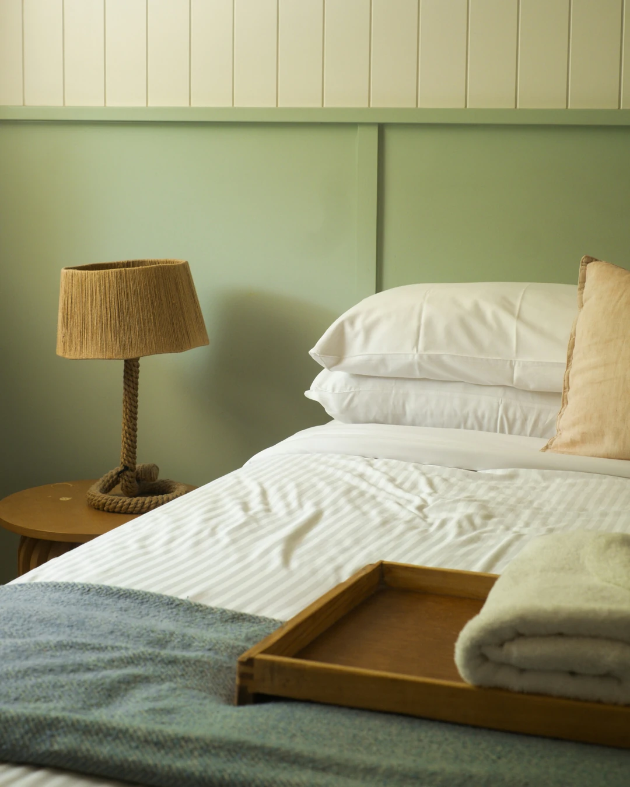
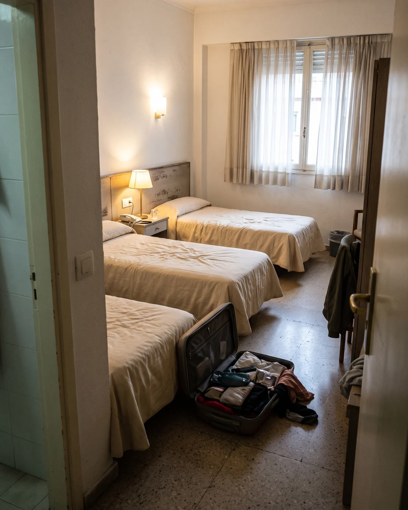

Caso n.º 21 · Camas
Sobre este caso
El caso n.º 21 está cerrado. Fue el caso diario del 21 de noviembre de 2026 y su tema fue Camas. Los detectives de aquel día tuvieron dos retos: cinco imágenes que clasificar en fotografías reales y generadas por IA, y cinco afirmaciones de una frase que clasificar en datos y bulos.
- Imágenes generadas por IA: 3 de 5
- Bulos: 3 de 5
Aquí tienes todas las respuestas. Cada imagen generada por IA trae el prompt que la creó, y cada afirmación, la verdad que hay detrás y los detalles que merece la pena recordar, para que compruebes qué se te escapó.
Uno de los bulos: «En 2025 se vendió la primera cama sin patas del mundo, suspendida a medio metro del suelo con electroimanes.» La verdad: Las camas levitantes no se vendieron por primera vez en 2025; el arquitecto holandés Janjaap Ruijssenaars presentó una cama flotante magnética en 2006.
¿Quieres afinar la vista? Lee nuestra guía para detectar imágenes de IA o nuestra guía para detectar un bulo y luego juega el caso de hoy.
Imágenes
-
Imagen 1

IA
La confesión del sospechoso
Una cama infantil con un edredón estampado, peluches amontonados contra la pared y un pijama tirado encima; luz cálida de lamparita de noche y grano leve.
-
Imagen 2

IA
La confesión del sospechoso
Una cama de matrimonio en una casa de pueblo, con cabecero de forja antiguo, colcha de ganchillo y una mesilla de madera con un vaso de agua; luz suave de tarde.
-
Imagen 3

REAL
Fotografía real
-
Imagen 4

REAL
Fotografía real
-
Imagen 5

IA
La confesión del sospechoso
Una habitación de hotel sencilla con dos camas individuales hechas, colchas lisas de color beige y una maleta abierta en el suelo; luz mezclada de lámpara y ventana, encuadre desde la puerta.
¿Dato o Bulo?
-
Afirmación 1
BULO «En 2025 se vendió la primera cama sin patas del mundo, suspendida a medio metro del suelo con electroimanes.»
Las camas levitantes no se vendieron por primera vez en 2025; el arquitecto holandés Janjaap Ruijssenaars presentó una cama flotante magnética en 2006.
- Potentes imanes la sostenían en el aire.
- Unos cables finos la sujetaban para que el magnetismo no la disparara.
-
Afirmación 2
DATO «Existe una cama patentada que, al detectar fuertes seísmos, traga al durmiente hacia un búnker de acero.»
Varios inventores han patentado camas antisísmicas que caen a un búnker de acero hermético; sus vídeos se hicieron virales.
- El búnker guarda provisiones, agua, oxígeno y botiquines hasta el rescate.
-
Afirmación 3
BULO «Existen sábanas que enfrían de forma independiente distintas partes del cuerpo para inducir el sueño profundo.»
Sistemas como Eight Sleep o BedJet calientan o enfrían el colchón con agua o aire, no con sábanas.
- Permiten una temperatura distinta para cada lado de la cama.
- No enfrían partes concretas del cuerpo de una misma persona.
-
Afirmación 4
DATO «El rey Luis XIV llegó a poseer más de 400 camas repartidas por sus palacios.»
Los registros históricos confirman que Luis XIV poseyó exactamente 413 camas en sus residencias y castillos.
- El «Rey Sol» era famoso por recibir a la alta nobleza desde la cama.
-
Afirmación 5
BULO «Un colchón japonés detecta los picos de estrés del sueño y emite vibraciones que interrumpen los malos sueños.»
No existe ese colchón japonés; lo más parecido es NightWare, una aplicación de Apple Watch autorizada por la FDA.
- Detecta picos de frecuencia cardíaca y movimientos asociados a las pesadillas.
- Una leve vibración en la muñeca corta la pesadilla sin despertar del todo.